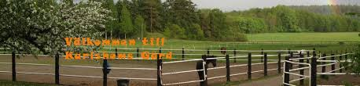
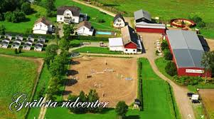

Ridläger
Karlshem
Karlshem: Är världens mysigaste ridläger med många fina hästar, jag har gått där 1 år och det var underbart men det krävs att man ska kunna sadla och tränsa själv och sådant, men självklart så finns det personal som kan hjälpa i början.
Det finns många olika läger som man kan boka på karlshem men jag valde orginallägret. På slutet av veckan så är det hopptävling med fina priser och en grillkväll där Åd som är ägaren av lägret berättar roliga historier. På alla läger är också terräng en av dom roliga sakerna på shemat!
Orginallägret: Det innehåller t.ex bad med hästarna som är det roligaste jag har gjort fast bailey, som jag då hade på lägret ville inte gå ner i vattnet.
träningsläger: Här är det mer träning och hårt jobb, när orginalllägret badar är det bra hoppträning, teori och dressyrträning.
Grällsta
Här är ett annat ridläger som jag själv inte kan berätta så mycket om men ska gå på detta ridläger snart. I detta ridläger får man också bada med hästarna. dom kommer ha en stor fin talangshow på slutet av veckan där alla deltagarne ska vara delaktiga ifall man vill. jag har dock valt träningshoppläger så jag vet inte om man får bada med hästarna då. Men jag tycker verkligen att ni ska boka detta.
Självklart finns det många mer ridläger men jag har ingen erfarenhet av det men jag tipsar och dom här ridlägerna.